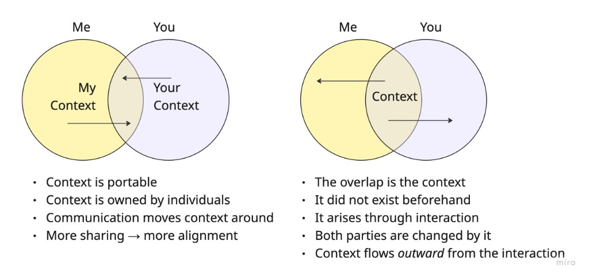
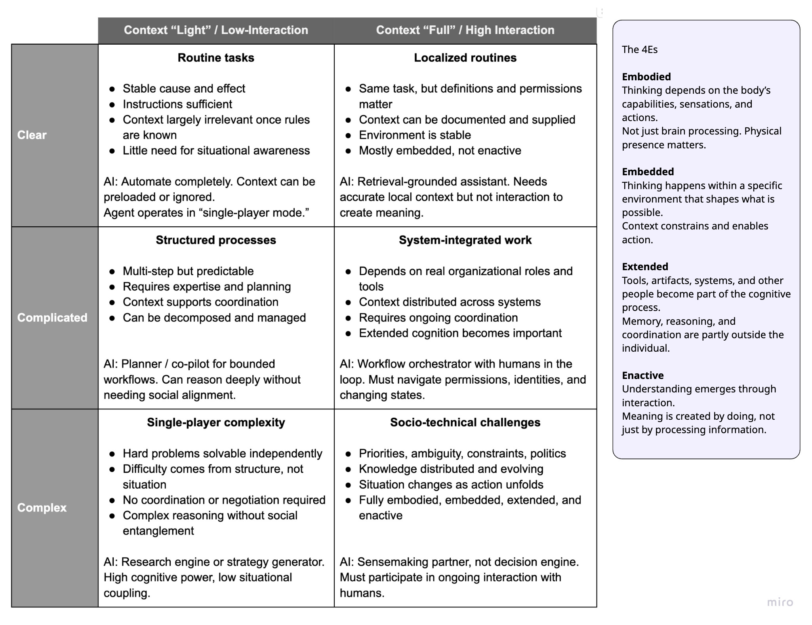
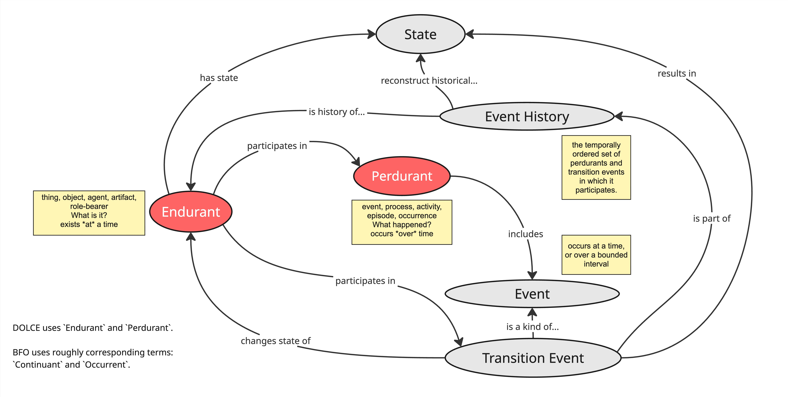

Context Is Not Just Transmitted
Summary
The Shannon-style view treats context as something that can be packaged and sent, while the 4E view treats understanding as something that emerges through interaction; that difference matters most in complex, evolving environments where endurants, perdurants, and meaning itself are still shifting.
One of the most important distinctions in this whole series is that context is not just something that is. In many settings, context is produced through interaction. That changes how we think about communication, coordination, and the role of AI.
It also connects directly to several earlier themes in the series:
legibility: the attempt to make context portable, stable, and readable at a distancemétis: the situated understanding that forms in actionendurants: the things the organization treats as stable enough to reason aboutperdurants: the unfolding interactions, decisions, and adjustments through which understanding changes

The key shift is from treating context as portable overlap to treating context as something that emerges through interaction.
Shannon vs. 4Es
The Shannon-style model treats communication as a transmission problem.
- someone has a message
- context helps decode it
- noise gets in the way
In that frame, better understanding comes from sending the right information with enough context attached. It is naturally attractive to legibility-first systems because it treats context as something that can be packaged, transported, and decoded.
The 4E view points somewhere else. Understanding is not just the reconstruction of a message. It is shaped by bodies, tools, environments, and interaction.
embodied: contact with reality mattersembedded: the environment shapes what can be seen and doneextended: thinking is distributed across people and toolsenactive: understanding emerges through interaction
The meeting, the working session, or the coordination ritual does not just transfer context. It generates it. That is much closer to the logic of métis, where understanding is formed in the situation rather than merely retrieved from a container.
Context Through Interaction
This matters because the portable-context model quietly assumes that people already have what they need, and only need to exchange it.
But in many real situations:
- the problem is still being framed
- the situation changes as people act
- interpretation shifts through disagreement and adjustment
- shared understanding does not exist beforehand
That is especially important in the language of this series. In complex settings, the endurants are evolving, the perdurants are unfolding, and the meaning of both changes as people engage with the work.
Context is therefore not just background. It is part of the process by which the system becomes legible to itself. In other words, the perdurant of interaction helps stabilize what the relevant endurants even are.
Why This Matters in Complex Environments
In complex environments, action and understanding co-evolve.
- people act
- the system changes
- new signals appear
- interpretations shift
- the next move changes again
This is why context cannot always be preloaded. Sometimes the act of coordinating is part of what creates the context needed for the next step.
That is also why clean summaries can mislead. They freeze what was actually dynamic, negotiated, and still evolving. The result is a familiar failure mode from earlier notes: containers and summaries start to stand in for the underlying reality.
How the Approach Varies by Setting
Not all work requires the same level of interaction, and not all settings require the same theory of context.

The right approach depends on both the nature of the work and how much interaction is needed to create meaning.
A useful shorthand is:
- in clear settings, endurants and perdurants are stable enough that context can often be preloaded, documented, or ignored
- in complicated settings, context may be distributed, but it can still often be aligned and coordinated across bounded structures
- in complex settings, context often emerges through interaction and cannot be separated from the work itself
That means the right use of AI also shifts:
- automate where context is stable and low-interaction
- retrieve and ground where local context matters but meaning is still portable
- support coordination where context is distributed across people and systems
- participate in shared sensemaking where understanding only forms through interaction
Reprise
It is useful to return to the original endurant-perdurant diagram here.

In simple settings, this diagram can look static. There is an endurant, a process, some events, and a state. But in complex settings, the important point is where context is actually emerging.
It emerges through:
- events and transition events that change the state of an endurant
- event histories that accumulate traces of what happened
- perdurants that are still unfolding as people interact with the situation
That is why context is not just a package surrounding a message. In many complex environments, context is produced as the endurant changes state, as events accumulate into history, and as the perdurant itself continues to unfold.
Seen this way, context is partly historical, partly situational, and partly emergent. It is not just what actors bring to the interaction. It is also what the interaction produces.
The Core Insight
The practical mistake is treating every environment as if it followed the same communication model.
If you assume all understanding is transmitted, you will over-invest in summaries, pre-reads, documentation, and context packaging. If you recognize that some understanding is generated through interaction, you start to value rituals, dialogue, backbriefs, working sessions, and other ways of creating context together.
That is another way of stating the series tension:
- legibility asks how to make context portable
- métis asks how to stay close to lived reality
- endurants ask what is stable enough to name
- perdurants ask what is still unfolding and therefore must be worked through
In the simplest terms:
- Shannon asks: how do we send context well?
- 4Es asks: how do we create understanding together?
Try This Now
- Think of one recent meeting, review, or handoff that went better after people talked live.
- Write down what was missing from the document, ticket, or summary beforehand.
- Ask: was the missing piece just more information, or did the shared understanding have to be created through interaction?
Keep Reading
AI Opportunities (and Caveats)